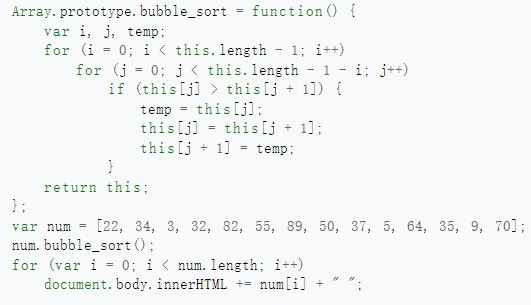

Bubble Sort
1.What is bubble sort?
Bubble sort is a simple and intuitive sorting algorithm that has been used for decades to sort data in various applications. It is a comparison-based algorithm that works by repeatedly swapping adjacent elements if they are in the wrong order. Bubble sort is often used as an introductory algorithm for computer science students due to its simplicity and ease of implementation. However, it has a relatively poor performance compared to other sorting algorithms, making it less suitable for large datasets.
Bubble sort works by repeatedly comparing adjacent elements in the list and swapping them if they are in the wrong order. The algorithm starts at the beginning of the list and compares the first two elements. If the first element is greater than the second, they are swapped. The algorithm then moves to the next pair of elements and repeats the process until it reaches the end of the list. At this point, the largest element is guaranteed to be at the end of the list. The algorithm then repeats the process for the remaining elements until the entire list is sorted.
2.History about bubble sort.
The history of bubble sort dates back to the early days of computer programming. It was first described by John von Neumann in 1945 as part of his work on the EDVAC computer. However, it was not until the 1950s that bubble sort was widely used in computer programs. At that time, computers had limited memory and processing power, and bubble sort was one of the few sorting algorithms that could be implemented efficiently.
3.The feature of bubble sort
A.Easy to understand:Its simplicity and ease of implementation make it an ideal starting point for students learning about sorting algorithms. Moreover, the principles behind bubble sort are still relevant today, as they form the basis of more advanced sorting algorithms such as quicksort and mergesort.
B.Stability:Bubble sort is a stable sorting algorithm, which means that it preserves the relative order of equal elements. For example, if there are two elements with the same value, the one that appears first in the original list will also appear first in the sorted list. This property makes bubble sort useful in certain applications where the order of equal elements is important.
C.In-situ sorting:Compared to other sorting algorithms, Bubble sort does not require additional data structures to assist in sorting. For example, quicksort requires the use of recursion to divide subproblems, while merge sort requires the use of an additional array to store intermediate results. These data structures require additional storage space, while Bubble sort only requires one array to store the elements to be sorted.
D.Time conplexity:ubble sort has a worst-case time complexity of O(n^2), which means that it takes quadratic time to sort a list of n elements. This makes bubble sort impractical for sorting large datasets, where faster algorithms such as quicksort or mergesort are more suitable.
4.Example codes

Reference
Image source:https://zh.wikipedia.org/zh-cn/%E5%86%92%E6%B3%A1%E6%8E%92%E5%BA%8F